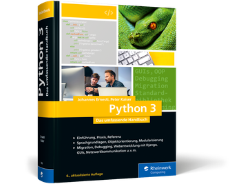

Python 3 - Das umfassende Handbuch

- Titel: Python 3 - Das umfassende Handbuch
- Author: Johannes Ernesti, Peter Kaiser
- Verlag: Rheinwerk
- ISBN: 978-1-56619-909-4
- Kategorie: Programmieren
- Seiten: 1200
- Jahr: 2019
Nicht Verfügbar
Beschreibung
Das Python-Handbuch zum Lernen und Nachschlagen! Ob Sie erst anfangen, mit Python zu arbeiten oder bei Ihrer Arbeit etwas nachschlagen möchten – in
diesem Buch lernen Sie alles, was Sie zu Python 3 wissen müssen. Angefangen mit einer Einführung in die Sprache bietet es eine Sprachreferenz, die
Beschreibung der Standardbibliothek und ausführliche Informationen zu professionellen Themen wie GUI-Entwicklung, Anbindung an C/C++ oder
wissenschaftliches Rechnen. Außerdem enthält es Hinweise für die Migration alter Projekte nach Python 3.